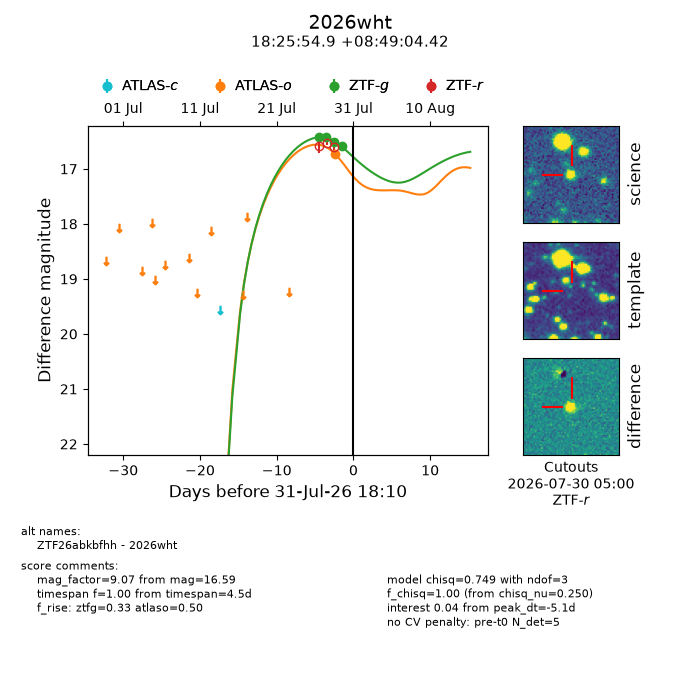
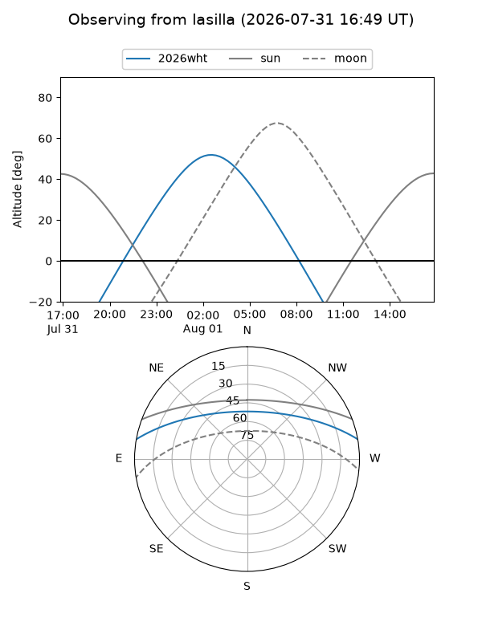
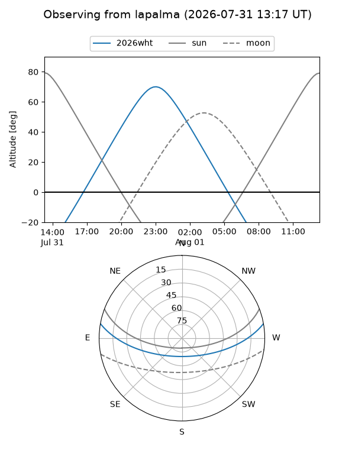
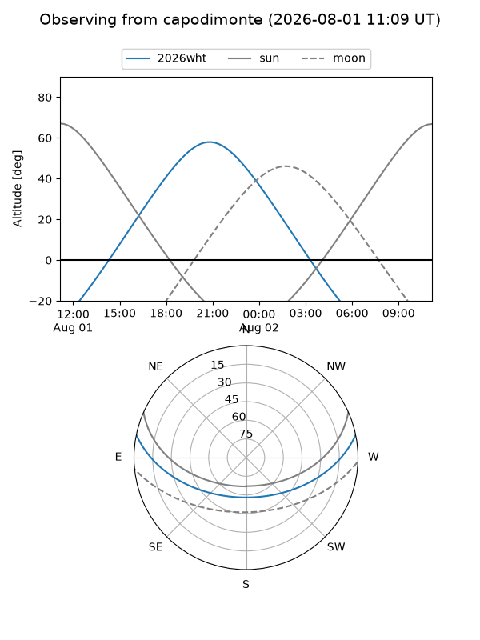
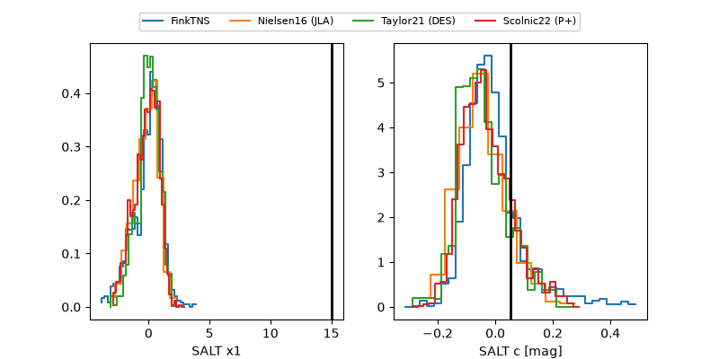

2026wht
Target 2026wht at 2026-08-01 06:12
Aliases and brokers:
FINK-ZTF: ztf.fink-portal.org/ZTF26abkbfhh
Lasair-ZTF: lasair-ztf.lsst.ac.uk/objects/ZTF26abkbfhh
ALeRCE-ZTF: alerce.online/object/ZTF26abkbfhh
YSE-PZ: ziggy.ucolick.org/yse/transient_detail/2026wht
TNS name: wis-tns.org/object/2026wht
Direct TNS query: direct search
alt names
ZTF26abkbfhh (ztf,fink_ztf)
2026wht (tns,yse)
Coordinates:
equatorial (ra, dec) = 276.4786,+8.81790
equatorial (HMS+DMS) = 18:25:54.86,+08:49:04.42
galactic (l, b) = (37.9570,+9.65075)
Flags:
TNS type: nan
peak dt: -4.6
Photometry:
last atlaso=16.73, ztfg=16.59
1 atlaso, 4 ztfg detections
Lightcurve

Visibility



Additional plots
